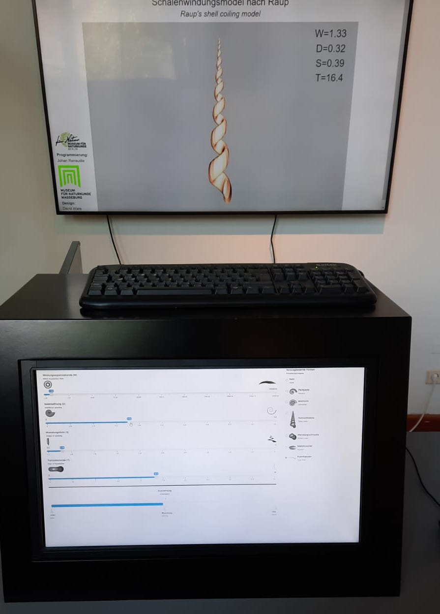
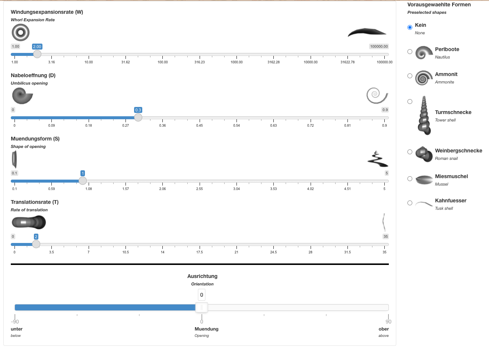
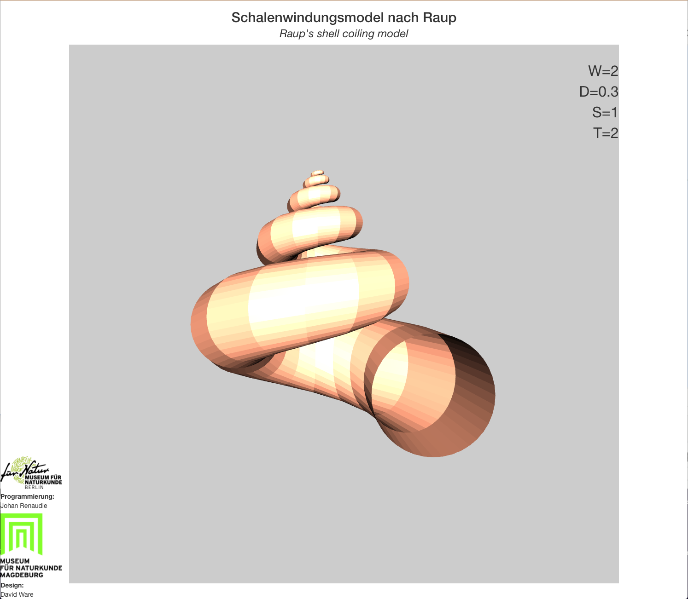

Our Shiny app displaying Raup's Coiling model
2021-08-11
As teased previously, I made a R shiny app for an exhibition at the Museum für Naturkunde in Magdeburg, together with a colleague of mine, David Ware. The app allows users to discover David Raup's mollusc coiling model, a morphometric model able to basically recreate any mollusc form, using a limited number of parameters; and thus allows them to discover the full potential morphospace of molluscs. 
The display in the exhibit.
The way we made it, the app opens 2 windows: one displayed on a touchscreen, showing the controls; the other shows the actual result, i. e. the model. The control panel allows the user to specify the 4 parameters of the model (the whorl expansion rate, the umbilicus opening, the shape of the opening and the rate of translation), the orientation of the model (on a single window display the user would be able to rotate the model in any direction desired but since it is here shown in a separate window we simplified it, and the user can only rotate around the x axis) or select predefined forms (such as nautilus, ammonite, snail, mussel, etc).
|  |  |
{kind=link}
{kind=link}
Controller (left) and display (right).
The code is available in its repository. Currently I only put the code for the app as displayed in the exhibit but I'll add soon a simplified, one-window version, in english, as a skeleton app so that people can build more complex apps from it. It was my first experience with shiny, and I'm frankly impressed at how simple and versatile it is.
The part of the code creating the actual mollusc form is surprisingly simple (which I guess is the beauty of Raup's concept). The only difficulty (so to speak) is working in cylindrical coordinates instead of cartesian ones.
make_elliptic_generating_shape <- function(D,S,res=100){
#Let's define the original ray as 1
a <- 1
rc <- (D+1)*a/(1-D) #D is the ratio between the distance from the origin to the distal part of the shape and that from the origin to the proximal part.
t<-seq(0,2*pi,by=pi/res)
b <- a/S # Here S is the long axis v short axis ratio of the ellipsis (as we only modelled elliptical/circular opening shapes here)
circle_0 <- cbind(r=rc + a*cos(t), y= b*sin(t), phi=0) #This is the equation for the shape in cylindrical coordinates.
return(circle_0)
}
#Function to coil the shape around the axis
coiling <- function(RT,W,generating_shape, turns,steps,dir="dextral"){
PHI <- seq(0,2*pi*turns,length=steps)
far_end <- generating_shape[1,1]
closest_end <- approx(generating_shape[generating_shape[,1]<far_end-1,2],
generating_shape[generating_shape[,1]<far_end-1,1],0)$y
D <- closest_end/far_end
rc <- (D+1)/(1-D)
rho <- function(theta, W, r0) r0 * W^(theta/(2*pi)) #See Raup 1966 for the equations.
y <- function(y0,W,theta,rc,T) y0 * W^(theta/(2*pi)) + rc*T*(W^(theta/(2*pi))-1)
circle <- apply(generating_shape,1,
function(x)lapply(PHI,
function(theta)cbind(r=rho(theta, W, x['r']),
y=y(x['y'],W,theta, rc,RT),
phi=theta)))
circle <- do.call(rbind,lapply(circle,function(x)do.call(rbind,x)))
#To cartesian coordinates
if(dir=="dextral"){ #For a dextral shell
XYZ <- list(X = circle[,1] * sin(circle[,3]),
Y = circle[,1] * cos(circle[,3]),
Z = circle[,2])
}else{ #For a sinistral shell
XYZ <- list(X = circle[,1] * cos(circle[,3]),
Y = circle[,1] * sin(circle[,3]),
Z = circle[,2])
}
XYZ
}References:
Raup, D. (1966). Geometric Analysis of Shell Coiling: General Problems. Journal of Paleontology, 40(5), 1178-1190.